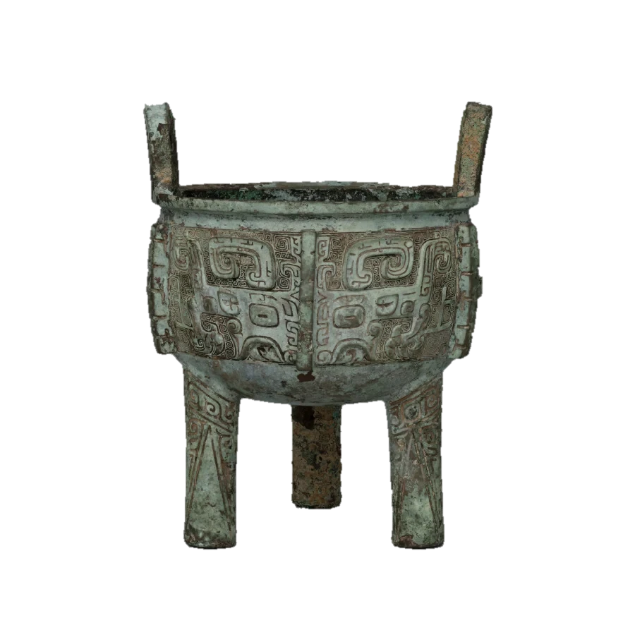

在九个方向里，
找到一件器物。
以洛书九宫替代常规的品类筛选。每一个方向是一条可追溯的理解路径，器物可以同时属于不同的文化坐标。

礼乐制度 · 西周
饕餮纹青铜鼎
一器承载的，是秩序如何被看见。

河洛地理 · 春秋
水鸟青铜器
从河流的生态，看古人的想象。

玉石意象 · 新石器
玉璧
圆形并非装饰，而是天空的尺度。

器物故事 · 仰韶
彩绘陶罐
纹样沿着陶土，留下早期的叙事。
以洛书九宫替代常规的品类筛选。每一个方向是一条可追溯的理解路径，器物可以同时属于不同的文化坐标。

一器承载的，是秩序如何被看见。
从河流的生态，看古人的想象。
圆形并非装饰，而是天空的尺度。
纹样沿着陶土，留下早期的叙事。